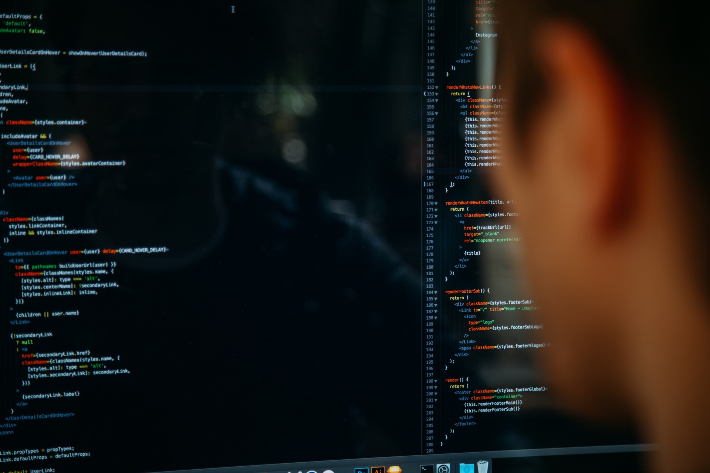

Tutkinnon suorittaneen osaaminen:
Tieto- ja viestintätekniikan perustutkinnon suorittaneella on tieto- ja viestintätekniikan tehtävissä edellytetty ammattitaito, ja hän osaa toimia yhteistyökykyisesti tieto- ja viestintäteknisessä ympäristössä.
Tutkinnon suorittanut osaa käyttää alan sanastoa, selvittää asiakkaan tarpeita ja tehdä asiakaslähtöisiä ratkaisuja tieto- ja viestintäteknisiin tehtäviin liittyen. Hän varmistaa, että työn lopputulos vastaa työlle asetettuja vaatimuksia.
Työtehtäviä, joissa tutkinnon suorittanut voi toimia:

Elektroniikka-asentaja osaa tehdä elektroniikka-asennuksiin liittyviä asennus-, testaus- ja huoltotöitä. Hän osaa käsitellä oikein elektroniikka-asennuksissa tarvittavia komponentteja ja materiaaleja sekä käyttää tarvittavia työ- ja mittavälineitä.
Hyvinvointiteknologia-asentaja osaa toimia sosiaali- ja terveysalan toimintaperiaatteiden ja arvojen mukaan. Hän osaa asentaa turvalaite- ja hyvinvointiteknologiajärjestelmiä sekä hyödyntää hyvinvointiteknologiaa asiakkaan toimintakyvyn ylläpitämiseksi. Hän varmistaa laitteiden turvallisen käytön ja opastaa asiakasta hyvinvointiteknologian käytössä.
Tietoverkkoasentaja osaa tehdä tietoverkkokaapeloinnit asiakkaan vaatimusten ja ohjeiden mukaisesti. Hän huomioi tietoliikenneverkkojen rakenteet ja käytetyt materiaalit sekä tekee tarvittavia mittauksia ja testauksia järjestelmän toimivuuden varmistamiseksi.
IT-tukihenkilö osaa toimia työasemien, verkko- ja lisälaitteiden sekä toimialueiden muodostamassa tieto- ja viestintäteknisessä ympäristössä. Hän toimii osana tietohallintoa sekä auttaa käyttäjiä erilaisissa teknisissä ongelmissa asiakkaan tiloissa tai etäyhteyden välityksellä.
Ohjelmistokehittäjä osaa ohjelmoida, hyödyntää rajapintoja, käsitellä tietoa sekä käyttää versionhallintaa. Ohjelmistokehitystiimin jäsenenä toimiessaan hän kommunikoi asiakkaan kanssa, suunnittelee ohjelmiston toteutuksen ja varmistaa toteutettavien toimintojen laadun.
Tieto- ja viestintätekniikan perustutkinnon rakenne ja sisältö on suunniteltu niin, että sähkö- ja automaatioalalla toimiminen -tutkinnon osan suorittaneella on rajoitettuun sähköpätevyyteen 3 määritelty soveltuva koulutus.